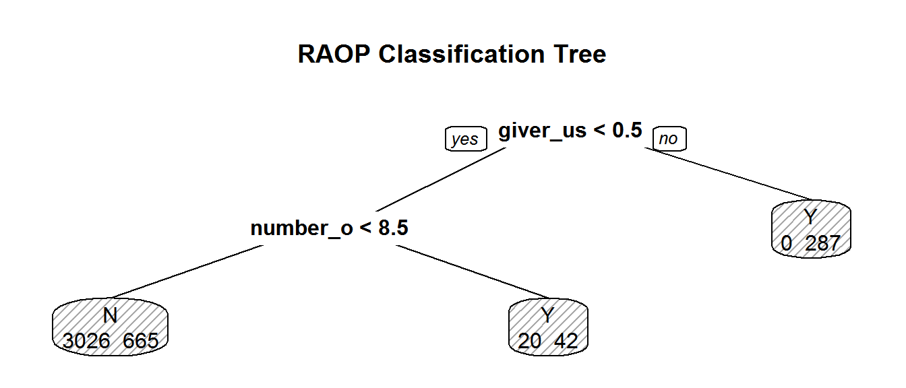

This vignette covers to process to train the models and predict against the test dataset. This is the continuation from the Exploratory Analysis already performed. The Exploratory Analysis vignette covers loading the raw data, converted to tabular format, and exploration to develop hypothesis. To see the Exploratory Analysis, read the vignette.
vignette("ExploratoryAnalysis")The naive model sets the baseline to which all other models are compared. It is the simple percentage of how many of the lines in the training dataset were successful. If the percentage is greater than 50% then we’d assume that all requests are successful. If less than 50%, then we’d assume none were successful. In this case, the success rate is only 24.5% so we’d assume that all requests for pizza would fail and would be correct 75.5% of the time.
train %>%
summarise(N=length(received_pizza),
Success=sum(received_pizza)) %>%
mutate(Percent=paste(round(Success/N,3)*100,"%",sep="")) N Success Percent
1 4040 994 24.6%library(doParallel)
cl <- makeCluster(2)
registerDoParallel(cl)The target in this challenge is binary and the values can only be values of 1 or 0. The requester either successfully receives a pizza or does not receive a pizza. We will use logistic regression because it will produce probability that the target value is 1.
train <- train %>%
mutate(received_pizza= factor(received_pizza, labels=c("N","Y")))
glm_ctrl<- trainControl(method="repeatedCV",
number=10,
repeats=10,
classProbs=TRUE,
summaryFunction = twoClassSummary,
allowParallel = TRUE)
LogMdl <- train(y=train$received_pizza,
x=subset(train, select=-received_pizza),
method="glm",
metric="ROC",
trControl=glm_ctrl,
family= "binomial")
stopCluster(cl)We see from the model summary below that there are a few variables with significant impact on the results. It is interesting that none of the days of the week had a significant impact. I would have expected it to have some difference between the weekdays or weekends. Also interesting is that the word ‘Thank’ has a high significance suggesting that a request saying thank you may have higher success rate.
summary(LogMdl)
Call:
NULL
Deviance Residuals:
Min 1Q Median 3Q Max
-1.9229 -0.6337 -0.4751 -0.2731 2.4693
Coefficients:
Estimate Std. Error z value Pr(>|z|)
(Intercept) -2.009e+00 2.090e-01 -9.611 < 2e-16 ***
giver_username_if_known 1.923e+01 2.206e+02 0.087 0.930521
account_age_in_days 1.019e-03 2.672e-04 3.813 0.000137 ***
days_since_first_post_on_raop 2.242e-03 6.247e-04 3.589 0.000333 ***
number_of_comments -2.510e-04 3.952e-04 -0.635 0.525273
number_of_comments_in_raop 2.530e-02 2.563e-02 0.987 0.323575
number_of_posts -1.664e-03 1.521e-03 -1.094 0.273913
number_of_posts_on_raop 8.268e-01 1.453e-01 5.691 1.26e-08 ***
number_of_subreddits 6.001e-03 3.826e-03 1.568 0.116771
upvotes_minus_downvotes 3.400e-05 4.298e-05 0.791 0.428842
upvotes_plus_downvotes -2.097e-06 6.445e-06 -0.325 0.744880
Year2012 -7.803e-01 1.077e-01 -7.243 4.39e-13 ***
Year2013 -1.092e+00 1.271e-01 -8.593 < 2e-16 ***
weekdayMonday 2.172e-01 1.666e-01 1.304 0.192182
weekdaySaturday 3.483e-02 1.739e-01 0.200 0.841298
weekdaySunday 5.138e-02 1.704e-01 0.302 0.762986
weekdayThursday 1.954e-01 1.686e-01 1.159 0.246504
weekdayTuesday -1.108e-01 1.728e-01 -0.641 0.521316
weekdayWednesday -1.358e-01 1.668e-01 -0.814 0.415478
Image 7.910e-01 2.684e-01 2.947 0.003205 **
Acct.Age -7.260e-01 2.042e-01 -3.555 0.000378 ***
BnRAOP 1.038e+00 5.265e-01 1.972 0.048627 *
Words -1.340e-03 1.496e-03 -0.896 0.370297
Word.bin 2.735e-01 1.156e-01 2.366 0.017959 *
anyon 2.734e-01 1.105e-01 2.474 0.013356 *
anyth 8.646e-02 1.224e-01 0.706 0.480035
appreci -6.603e-02 1.232e-01 -0.536 0.591891
broke 1.431e-01 1.136e-01 1.259 0.207886
can -3.397e-02 7.000e-02 -0.485 0.627501
day 2.220e-01 7.307e-02 3.038 0.002380 **
dont -4.092e-02 8.568e-02 -0.478 0.632967
eat -6.789e-02 9.849e-02 -0.689 0.490667
even 3.790e-02 1.153e-01 0.329 0.742377
food 6.044e-02 7.565e-02 0.799 0.424292
forward 1.476e-01 1.476e-01 1.000 0.317479
friend -4.461e-01 1.287e-01 -3.468 0.000525 ***
get -3.478e-02 6.214e-02 -0.560 0.575688
give -1.279e-01 1.268e-01 -1.009 0.313150
got 1.095e-01 9.858e-02 1.111 0.266604
help 9.962e-02 7.040e-02 1.415 0.157071
hungri -3.210e-01 1.490e-01 -2.154 0.031221 *
ill -3.356e-02 1.231e-01 -0.273 0.785040
ive 5.817e-02 8.359e-02 0.696 0.486524
job 2.046e-02 7.938e-02 0.258 0.796574
just -9.298e-06 6.517e-02 0.000 0.999886
know -1.087e-01 1.100e-01 -0.988 0.323241
last 1.337e-01 9.187e-02 1.456 0.145516
like -3.236e-03 9.212e-02 -0.035 0.971982
live -9.742e-02 1.013e-01 -0.961 0.336408
love -9.379e-02 9.604e-02 -0.977 0.328801
make 2.310e-02 9.471e-02 0.244 0.807332
money -2.667e-02 8.245e-02 -0.323 0.746330
month 1.096e-01 9.071e-02 1.209 0.226744
much 1.697e-01 1.027e-01 1.652 0.098455 .
need -4.832e-02 1.073e-01 -0.450 0.652489
new 5.243e-03 1.175e-01 0.045 0.964422
`next` 2.815e-01 1.164e-01 2.419 0.015584 *
now 2.325e-02 1.012e-01 0.230 0.818244
one -6.073e-02 9.711e-02 -0.625 0.531715
paid 1.523e-01 1.127e-01 1.352 0.176287
pay 1.477e-01 9.847e-02 1.500 0.133611
realli -7.838e-03 7.459e-02 -0.105 0.916306
right 8.767e-02 1.384e-01 0.633 0.526543
someon 7.808e-02 1.045e-01 0.747 0.455076
thank 3.174e-01 8.376e-02 3.789 0.000151 ***
time 6.117e-02 8.967e-02 0.682 0.495092
today -8.496e-02 1.128e-01 -0.753 0.451410
tonight 1.908e-01 1.152e-01 1.656 0.097626 .
tri -2.443e-02 1.203e-01 -0.203 0.839110
want 1.958e-02 1.007e-01 0.194 0.845799
week 8.757e-03 7.647e-02 0.115 0.908826
will -3.966e-02 7.277e-02 -0.545 0.585783
work 7.882e-02 7.012e-02 1.124 0.261016
---
Signif. codes: 0 '***' 0.001 '**' 0.01 '*' 0.05 '.' 0.1 ' ' 1
(Dispersion parameter for binomial family taken to be 1)
Null deviance: 4508.2 on 4039 degrees of freedom
Residual deviance: 3245.0 on 3967 degrees of freedom
AIC: 3391
Number of Fisher Scoring iterations: 16Classification and Regression (CART) models split the the dataset by variable to minimize the variance in each split. In the plot below, you see that the right fork has no failed requests and only 287 successful requests.
cl <- makeCluster(2)
registerDoParallel(cl)
Cart_ctrl<- trainControl(method="cv",
number=10,
classProbs=TRUE,
summaryFunction = twoClassSummary,
allowParallel = TRUE)
CartMdl<- train(y=train$received_pizza,
x=subset(train, select=-received_pizza),
metric="ROC",
method="rpart",
trControl= Cart_ctrl,
cp=.05)
stopCluster(cl)
prp(CartMdl$finalModel,
main= "RAOP Classification Tree",
extra=1,
box.col=c("pink","palegreen")[CartMdl$frame$yval],
leaf.round=2)
With the models trained, we’ll use confusion matrices to understand how accurate the models are. Both models have similar accuracy scores. The logistic regression and CART models showed 83 accuracy%. Both of these are significant improvements over the naive model with 75% accuracy.
We’ll take the 60/40 weighted average of the predicted probabilities from these two models. This should give a better result on the test dataset.
LogScore<- predict(LogMdl, data=train, type="prob")
confusionMatrix(LogScore[,2]>.5, train$received_pizza=="Y", positive="TRUE")Confusion Matrix and Statistics
Reference
Prediction FALSE TRUE
FALSE 2995 613
TRUE 51 381
Accuracy : 0.8356
95% CI : (0.8239, 0.8469)
No Information Rate : 0.754
P-Value [Acc > NIR] : < 2.2e-16
Kappa : 0.4528
Mcnemar's Test P-Value : < 2.2e-16
Sensitivity : 0.38330
Specificity : 0.98326
Pos Pred Value : 0.88194
Neg Pred Value : 0.83010
Prevalence : 0.24604
Detection Rate : 0.09431
Detection Prevalence : 0.10693
Balanced Accuracy : 0.68328
'Positive' Class : TRUE
CartScore<- predict(CartMdl, data=train, type="prob")
confusionMatrix(CartScore[,2]>.5, train$received_pizza=="Y", positive="TRUE")Confusion Matrix and Statistics
Reference
Prediction FALSE TRUE
FALSE 3026 665
TRUE 20 329
Accuracy : 0.8304
95% CI : (0.8185, 0.8419)
No Information Rate : 0.754
P-Value [Acc > NIR] : < 2.2e-16
Kappa : 0.4152
Mcnemar's Test P-Value : < 2.2e-16
Sensitivity : 0.33099
Specificity : 0.99343
Pos Pred Value : 0.94269
Neg Pred Value : 0.81983
Prevalence : 0.24604
Detection Rate : 0.08144
Detection Prevalence : 0.08639
Balanced Accuracy : 0.66221
'Positive' Class : TRUE
MergedScore<- MergeModels(cbind(LogScore[,2],CartScore[,2]),c(.6,.4))
confusionMatrix(MergedScore>.5, train$received_pizza=="Y", positive="TRUE")Confusion Matrix and Statistics
Reference
Prediction FALSE TRUE
FALSE 3027 664
TRUE 19 330
Accuracy : 0.8309
95% CI : (0.819, 0.8424)
No Information Rate : 0.754
P-Value [Acc > NIR] : < 2.2e-16
Kappa : 0.4169
Mcnemar's Test P-Value : < 2.2e-16
Sensitivity : 0.33199
Specificity : 0.99376
Pos Pred Value : 0.94556
Neg Pred Value : 0.82010
Prevalence : 0.24604
Detection Rate : 0.08168
Detection Prevalence : 0.08639
Balanced Accuracy : 0.66288
'Positive' Class : TRUE
Finally, we’ll apply the models to the test set and create the final dataframe for submission.
LogPred <- predict(LogMdl,newdata=test, type="prob")
CARTPred <- predict(CartMdl, newdata=test, type="prob")
Merged<-MergeModels(cbind(LogPred[,2],CARTPred[,2]), c(.6,.4))
Submit<- data.frame(request_id=test$request_id,
received_pizza=Merged)